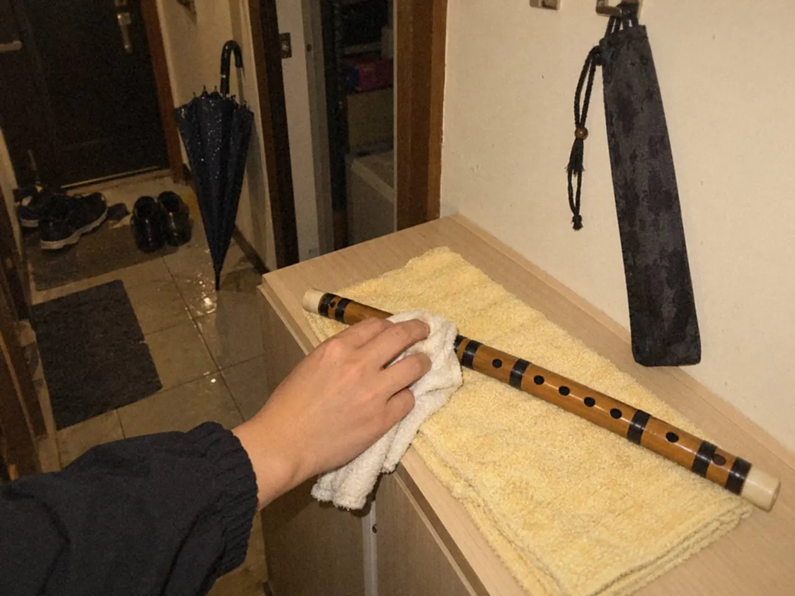
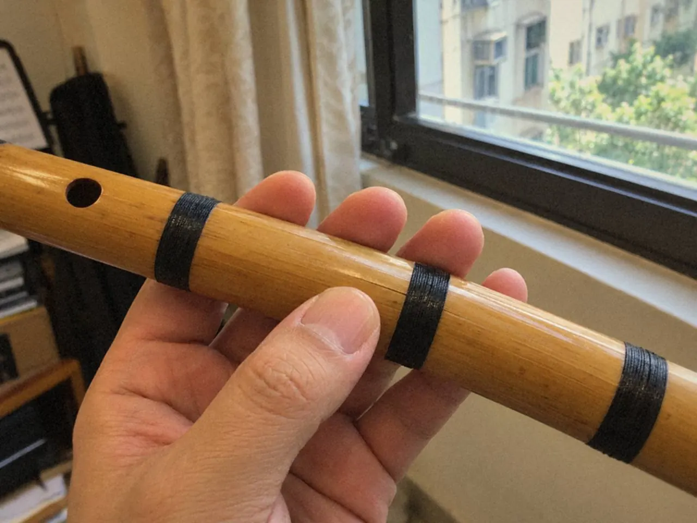

竹笛和洞簫的保養，重點是減少急劇變化：吹完按製作者建議處理水氣，袋子保持乾爽，避開高熱、暴曬和突然的溫差。不用很多用品，每次都做得到的收拾習慣最有用。

雨天上完課，笛袋和外套一起帶着濕氣回家。最想做的事是放下袋子，改天再算。竹管就這樣悶在濕袋裏過了一夜。
香港的天氣，竹管怕甚麼？
濕度變化、溫差和碰撞都會影響竹身。香港特別多的情況，是由冷氣環境走到室外，再回到另一個冷氣房。
竹材會隨環境變化而反應，最應避免的是粗暴處理和劇烈轉變。很多問題一開始只是水氣、灰塵、手汗或收納不當，拖久了才變成維修問題。
保養類的問題，先看三樣：練完怎樣抹，放在哪裏，聲音反應有沒有變慢。收拾不好的影響會直接落在聲音和手感上，有時甚至被誤當成技巧問題。
通風、擦乾和逐步適應溫差，已是大部分的工作。
雨天回家後，先做甚麼？
樂器和袋子分開檢查。把濕樂器長時間悶在袋裏，不是妥善保存。

次序大致是這樣：
- 取出笛子，看袋子是否潮濕。
- 用適合的乾淨軟布輕抹表面。
- 內部清潔照老師或製作者的建議做，不要讓工具刮傷竹管或碰壞笛膜。
- 袋子若濕，先讓它乾爽，才放回樂器。
- 順道看一眼綁線、接口及孔邊有沒有異常。
趕時間也不要放在暖風機、陽光或高熱附近，更不要隨意用水浸洗。
怎樣減少裂紋的風險？
吹完之後，先看管內與袋內是否仍有明顯水氣，按製作者提供的方法處理。
從冷氣環境到室外時，不要立即把樂器放到高熱位置。潮濕天氣下也不應過度烘乾。要避免的事可以記成幾項：
- 高熱烘乾、直接暴曬、突然劇烈的溫差
- 浸水，或塗上不明油品
- 用強力膠自行填補
定期觀察原有的細紋、接口和笛膜狀態，有變化便記下位置。

發現裂紋、接口鬆動或膜孔異常，先請合適人士檢查，也別繼續用力試吹來確認。自行黏補只會把問題掩蓋起來。及早處理，比等到音準或發聲突然異常才去看，更容易掌握情況。
平日放在哪裏？
存放處要遠離容易碰撞、直接日照和冷氣直吹的位置。未必需要購置很多用品，樂器有支撐、袋盒乾爽、收納習慣一致，已經足夠。
保養用不着複雜。每次吹完，花一會兒擦拭、檢查、收好就夠。
洞簫的保存有甚麼不同？
原則相同。吹奏後按製作者建議處理水氣，存放在穩定、乾爽、不易碰撞的位置，避開日照、高熱和突然溫差，不要隨意浸泡或塗不明油品。
從冷氣房帶到室外後，一樣先避開日照和高熱，不要急着用強熱把水氣烘走。袋子潮濕時先晾乾再收納，並留意有沒有新的細紋或接口變化。
保養方式以製作者對該樂器的指引為依據。
某次吹奏後聲音明顯不同，或最近聲音反應變慢，可以記錄天氣、使用時間與異常位置，再找合適人士檢查。清楚的觀察，比自行塗抹不熟悉的材料幫得上忙。
常見問題
竹笛受潮了，可以用風筒吹乾嗎？
不要。高熱烘乾和暖風機都應避免。用乾淨軟布輕抹，讓樂器和袋子分開自然乾爽。
竹笛出現細紋，可以自己用膠水補嗎？
不要自行用強力膠填補，也別繼續用力試吹。記下位置，交由合適的維修人員檢查。
竹笛可以塗油保養嗎？
不要塗不明油品。是否需要保養油、用甚麼，都按製作者對該樂器的指引。
下次雨天回家，先把樂器和袋子分開看一次，再替它定一個固定的位置。笛子裂紋以外的聲音問題，可看笛膜：貼法與聲音；選購時要問甚麼，可看第一支笛子：D、G 還是 F 調。保養有疑問，可經笛子課程或洞簫課程查詢。